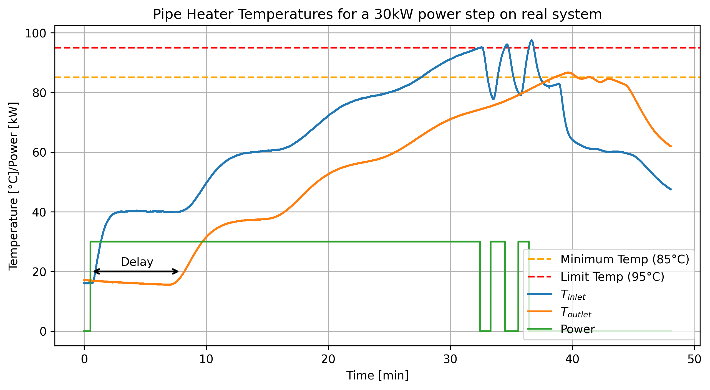
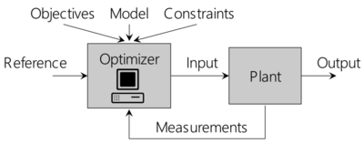
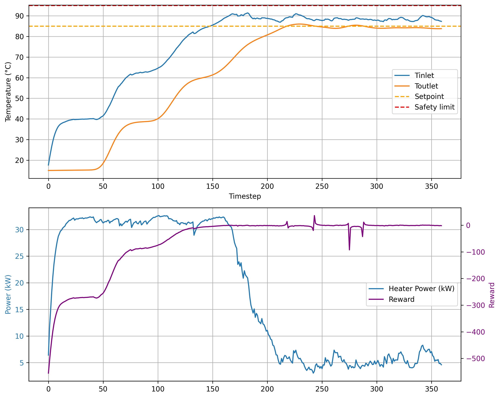
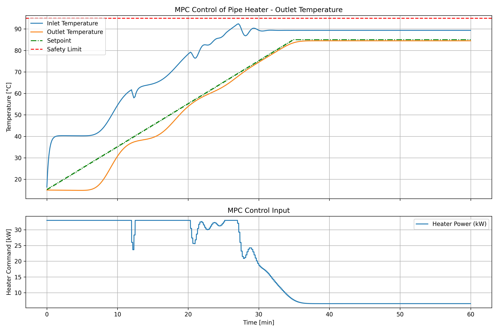
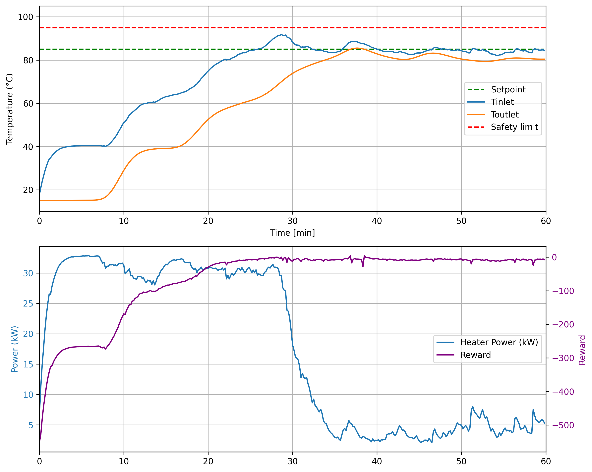
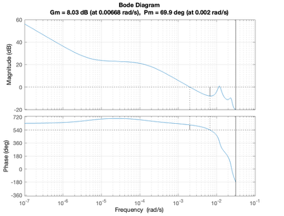
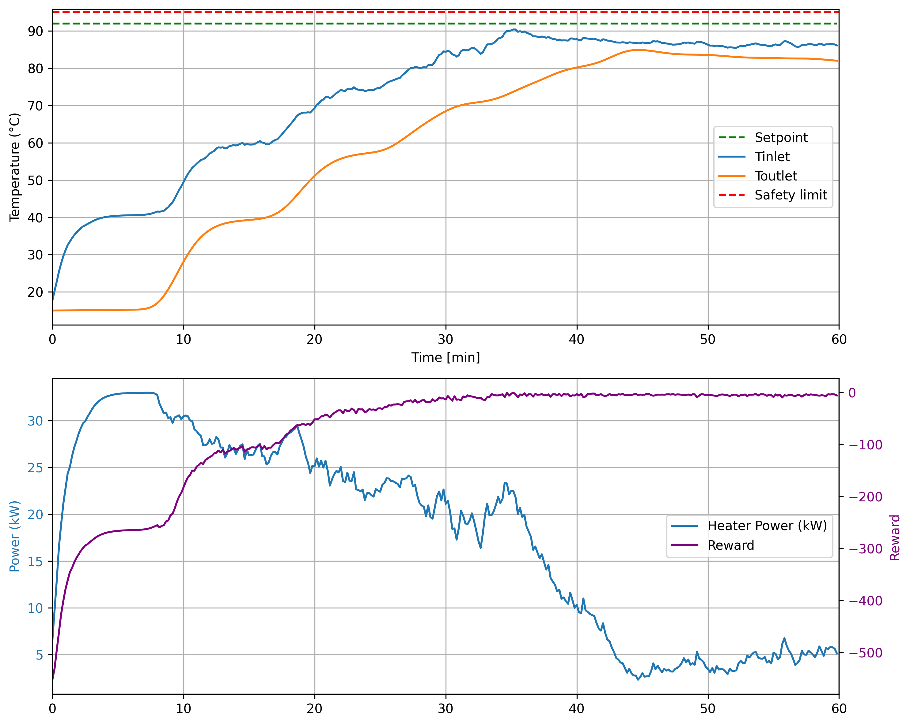
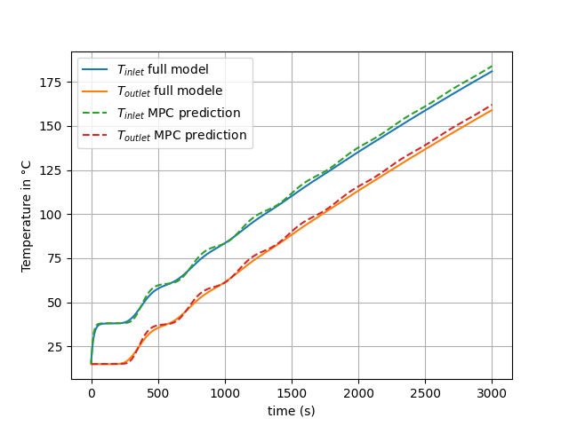

Heated Pipe System with Heat Losses#
This tutorial demonstrates the approach to regulating the outlet temperature of a 450-meter heat pipe near its boiling point, emphasizing the solution methodology over equation details
1. System Description#
The system consists of a 450 mm circular pipe through which water flows continuously. A heater is connected at the entrance (\(x = 0\)) of the pipe, providing a constant power input \(P\) to the water. The water flows with constant velocity \(u\), losing heat to the environment due to convection. At the outlet, the water returns to the heater, creating a closed loop.

The goal is to perform a bacteria decontamination of the loop, requiring a temperature of at least 85°C through the loop with a 2°C/min ascent and without creating steam in the pipe.
How to ensure \(T_{outlet}\)>85°C and \(T_{inlet}\)<95°C ? Can we control the heating speed precisely to 2°C/min?
First findings, why is it tricky?#
Following plot shows what happens when the system is heated at a constant 30kW power which is barely the maximum power :

From this we observe :
Stair-like behavior due to the recirculation of water
An inlet temperature that can go close to 100°C despite an outlet temperature that is barely above 85°C
A significant delay (~12 min)
A coupling and an intrication between inlet and outlet temperature
A single test is about 3 hours to consider rising time
Perfomances are defined on outlet temperature
Security is defined on inlet temperature
How to model and simulate these stairs and avoid testing on the real system?
Naive model#
The following simulation divides the pipe into small segments to model heat transfer step by step. At each time step, every segment’s temperature is updated based on its neighbors and the environment (using a heat loss coefficient), while the temperature at the pipe’s end is “pushed forward” to the start—like a wave of heat moving through. The heater at one end injects warmth, and the animation reveals how heat spreads, stabilizes, and flows through the system.

This gives a first approximation and intuition on the system to explain the stairs, how the heat is exchanged and the impact of losses on the heating curve.
Detailed plots in Appendix show the impact of heat loss coefficient and external temperature on the curves.
2. System Modeling#
Physical model equations:#
The system schematic is shown below:

The evolution of the temperature in the pipe is governed by the following partial differential equation (PDE) obtained by writing the energy balance equation of a pipe infinitesimal segment:
All notations are detailed in Appendix.
To include the heater power in the equations, we can write the energy balance of the heater using \( \Theta_{\text{inlet}}(t) = T_{\text{inlet}} - T_{\text{ext}} \) and \(\Theta_{\text{outlet}}(t) = T_{\text{outlet}} - T_{\text{ext}}\). This allows to write the following Delayed Equations in which \(\tau\) is the time of travel, \(P\) the power of the heater, and \(K<1\) the loss coefficient:
These equations are teaching us that:
A pipe segment always sees the water from one turn past, which temperature is modulated by the losses,
From an energy point of view, the system adds to the loop the amount of energy contained by the water inside the heater,
Effect of the power is inversely scaled by the flow \(\dot{m}\) which directly affects system properties.
System Simulation#
Previous equations are used with a ODE solver (via ODE integration) to simulate the system. Following example show the step response of the system for a given power input :
from simulation_backend import *
from ipywidgets import interact, FloatSlider, fixed
interact(
simulate_and_plot,
P=FloatSlider(min=1, max=33, step=0.5, value=10, description='Power (kW):'),
T_ext=FloatSlider(min=0, max=40, step=0.5, value=10, description='External temperature (°C):')
);
# if sliders are not working:
simulate_and_plot(P=10)
3. Control#
Control Objectives#
Our system should respect the following requirements:
Outlet temperature of at least 85°C while respecting a 2°C/min ascent
Ensure constant outlet temperature control
Ensure inlet temperature remains below 95°C
Be robust to external temperature changes
1) Traditionnal SISO control technique, with tinkering#
The standard equation of the PI controller is:
where:
u(t) is the power of the heater,
\(K_p\) is the proportional gain,
\(K_i\) is the integral gain,
e(t) is the error between the setpoint and the outlet temperature.
This is a Single Input - Single Output (SISO) controller First simulation show the result with a P controller only. It exhibits the need to continuously add energy to the system to compensate for the losses, hence a nonzero \(K_i\) :
from PI_backend import *
# Interactive sliders for tuning Kp, Ki, and T_ext
interact(
simulate_PI,
Kp=FloatSlider(min=0, max=2000, step=50, value=1500, description="Kp [W/°C]"),
Ki=FloatSlider(min=0, max=0.5, step=0.025
, value=0.01, description="Ki [W/(°C·s)]"),
T_ext=FloatSlider(min=0, max=40, step=1, value=20, description="T_ext (°C)"),
T_set=fixed(85.0),
save_csv = fixed(False),
ramped = fixed(False),
csv_filename = fixed(""),
alpha = fixed(10.0),
);
# if sliders are not working:
simulate_PI(Kp=1500,Ki=0, save_csv=False, T_ext =20)
With correct tuning of the coefficients, we obtain the following behavior :
simulate_PI(Kp=1300, Ki=0.08, T_ext=10, save_csv=True, ramped = False, csv_filename="results/PI_run_data.csv", T_set = 85);
Saved PI simulation results to results/PI_run_data.csv
This shows the ability of the PI controller to precisely track an outlet setpoint temperature. The good performance can be explained by the linearity between power input and outlet temperature for a fixed external temperature.
How to enforce constraint handling on such a controller?
PI controllers have no direct way to ensure constraints, especially when the constraint is defined on another variable. To overcome this issue, we propose a gain scheduling technique based on the inlet temperature. To ensure security on inlet temperature, the gains \(K\) are modified dynamically based on \(T_{\text{inlet}}\) as follows:
where:
\(K_{\text{initial}}\) is the initial gain,
\(\alpha\) is a tuning parameter controlling the rate of gain reduction,
\(T_{max}=95°C\) is the limit temperature
This ensures that the system is maintaining security requirements in a soft manner, while tracking the reference of outlet temperature. Results will be given below.
2) Optimal control via MPC, SIMO control fashion#
Since we have access to a model, we can explore optimal control via Model Predictive Control (MPC). MPC leverages the model to find the best input to the system based on a horizon prediction (\(N_p\)). Its strength is to be able to consider both states for a single input to the system. At each timestep, MPC controller computes the best input sequence for the future, apply the first one, and repeat the process to ensure good predictions and response to uncertainties.

[source : ETH]
To do so, MPC uses weights to formulate the control objective and respect constraints in the optimization process. MPC formulation of the problem is as follows:
where:
\(x = (T_{inlet},T_{outlet} )\) is the state
\(N_p\) is the prediction horizon.
\(T_{set,i}\) is the moving reference at time \(i\).
\(d_i\) is the moving disturbance (\(T_{ext}\)) at time \(i\).
\(Q \succ 0\) and \(R \succ 0\) are weighting matrices for output tracking and input usage, respectively.
Is MPC tractable on this problem? Think about the problem size …
This approach can be solved using Quadratic Programming (QP) formulation. However, to employ this technique, difficulty lies in the fact that :
The model is high order, \(x\) is (1,30) for a 30 segment pipe discretization.
Horizon to control \(T_{outlet}\) should be 600, which implies dealing with huge matrices.
For each :
1: \(N\) is set to 20 to lighten the simulation, and could be tackled by using simplified models for \(T_{inlet}\) and \(T_{outlet}\) respectively
2: is tackled by setting the controller frequency to 0.1Hz, meaning one step is 10s, and setting the horizon to 70 steps, i.e. 700s
Results are given below:
from ipywidgets import interact, FloatSlider
from MPCRun import run_MPC
run_MPC(Hp=80, Q=[0.0, 1e3], R=1e-5, Rd=1.0, T_set=[92.0, 85.0], T_safety=95.0, ramped = False)
From this, we can observe a more complex behavior than the PI controller which was bounded to its linear behavior. However, this does not give any better performance since the PI controller was already leveraging the power limit to perform quick tracking. Interestingly, a small non-zero steady state error remains.
As a strong advantage, this formulation is way more flexible and allows to control each temperature with the same controller.
3) Reinforcement Learning#
Reinforcement Learning (RL) uses a generic formulation of the control problem as an environment to which is inputted an action and which outputs an observation and a reward. RL algorithms uses the reward to learn a policy \(\pi(state)=action\). The goal of the learning process is to make this policy converging towards an optimal policy \(*\pi^*\) i.e. the one that maximizes the cumulative reward on an episode.

We define our environment as follows using our simulation :
Action
At each timestep, the agent selects a continuous action
which corresponds to the heater power in kilowatts.
State (Observation)
The observation provided to the agent is a vector of five components:
Note 1 : these are a bit redundant and are used for simulation simplicity, for a more general case, \(T_{ext}\) should also be included to allow the agent to react to fast temperature changes from the environment.
Note 2 : For control, relative observation allows to make the developed policy independant of the setpoint value.
Reward
The reward balances setpoint tracking, smooth control, energy usage, and safety:
\(-\lvert T_{\text{sp}} - T_{\text{out}} \rvert\): directly penalizes deviation from the outlet setpoint,
\(-\lambda_{\Delta P}\,|P - P_{\text{prev}}|\): penalizes fast changes in heater power and incentive constant power,
\(\lambda_P P\): small incentive for using heater power, this helps to explore despite large delay,
\(r_{\text{safety}} = -10\) if \(T_1 > T_{\text{safety}}\), otherwise \(0\).
Algorithm
Soft Actor-Critic SAC is chosen for its good versatility and performances.
Results
To prevent noisy outputs from the RL controller, actions are filteredd with an average filter (\(\alpha=0.2\)) giving :

This problem could also be solved by discretizing the output of the RL controller, allowing for 0.5 kW steps only (for example). Despite filtering, RL controller fails tracking precisely the target temperature with precision.
Comparison and conclusion#
We compare and discuss the 3 methods based on:
Their performances on setpoint tracking
The compliance with the security criterion on inlet temperature
Their complexity of validation and integration
Performances : Constant setpoint tracking#
On the task of tracking a constant outlet temperature, all the controllers achieve similar performances. This is due to :
The saturation of the input between 0 and 25 min approximately
The fact that the system is mainly linear, meaning that an optimal linear controller exists
Comparison of the 3 approaches is presented below. The PI controller is the most precise one, RL controller fails maintaining a constant temperature and MPC suffers from a small steady-state error of 0.4°C.
from compare_everything import plot_comparison_step
plot_comparison_step()
Performances : Ramp setpoint tracking#
To discriminate their capabilities, we can compare them on the tracking of a ramped temperature of 2°/min with a saturation at 85°C.
The PI controller can be fine-tuned to track the reference:
Warning, this example is a bit tricky because the PI controller has no information about the delay, the fact it is able to track it accordingly is due to a specific tuning, to use a PI controller properly on this system, a delay compensator should be integrated
simulate_PI(Kp=1300, Ki=0.15, T_ext=10, save_csv=True, ramped = True, csv_filename="results/ramp_PI_run_data.csv");
Saved PI simulation results to results/ramp_PI_run_data.csv
This shows that, with correct tuning, we can obtain a 2°C rate, but technically the temperature is not following the setpoint, meaning that this is more of a lucky behavior due to controller tuning.
MPC and RL are run on the ramp reference with same tuning as before. For the MPC controller :

And for the RL controller, we obtain :

Comparison is given below :
from compare_everything import plot_comparison_ramp
plot_comparison_ramp()
The MPC controller can track the reference without fine-tuning, as it can predict to use a given input for its future output. RL has not been trained on the ramp following and exhibits its limitation on out-of-distribution example, meaning the training was not good enough for the controller to generalize. PI controller creates a roughly 2°C/min ramp due to a good tuning but is unable to make the outlet temperature converge to the setpoint during ramp time.
Security#
The system we studied has some inherent risks which can disturb the controllers, among which :
Control instability
Boiling water or steam at pipe inlet
Rapid change in external temperature
Sensor failure
Stability
The slow dynamics of the system makes it inherently stable. However, trying to heat quicker implies using high gains which could result in instability, for the PI controller this is handled by checking the closed loop stability via Nyquist criterion (See here) using Bode diagram of the PI controller:

Similar reasoning can be performed on the MPC controller using assumptions on cost to conclude on a Lyapunov stability.
RL controller is harder to validate for stability, only multiple simulation on the learned controller can allow to evaluate its stability. On smaller observation space, the policy function could be studied in a bounded space to conclude on system stability using closed loop arguments.
Boiling water
The risk of having boiling water or steam in the system is the most dangerous risk of the system which could damage the pipes, or harm an operator. To mitigate the risk
Gain scheduling based on inlet temperature can be used on PI controllers, the lower \(\alpha\) is, the stronger the security is:
from PI_backend import *
# Interactive sliders for tuning Kp, Ki, and T_ext
interact(
simulate_PI,
Kp=fixed(1300.0),
Ki=fixed(0.08),
T_ext=FloatSlider(min=0, max=40, step=1, value=20, description="T_ext (°C)"),
T_set=FloatSlider(min=0, max=95, step=1, value=92, description="T_set (°C)"),
save_csv = fixed(False),
ramped = fixed(False),
csv_filename = fixed(""),
alpha=FloatSlider(min=0.1, max=10, step=0.5, value=8, description="alpha"),
);
#if sliders are not working :
simulate_PI(Kp=1300, Ki=0.08, save_csv=False, T_ext=20, alpha=5, T_set=95)
MPC controller is inherently respecting constraints, if the optimization process is correctly set up. Meaning it would get as close as possible to unfeasible points.
RL controller has a dedicated reward to avoid high temperatures but needs to be carefully checked in simulation. Current controller is respecting contraints but fails converging to a different setpoint, meaning the learning process did not generalize properly:

Technically, the difference between inlet and outlet temperatures converges to a fixed value. Thus, no problem should occur if the outlet setpoint is chosen below a certain max value. However, regardless of the chosen method a security mechanism has to be implemented to stop heating if temperature goes above a certain value. This can be made via continuous decreasing (equivalent to scheduling) or discrete turn-off.
Rapid changes in external temperature
Rapid changes of the external temperature could threaten controllers ability to steer the temperatures to their setpoints. The effect of \(T_{ext}\) and the robustness of the current controllers can be assessed in simulation on specific use-cases. This has been done using sine wave of +/- 5°C on \(T_{ext}\) with a period of half an hour on the PI controller + gain scheduler. This showed the controller ability to respect the security constraints, while sometimes taking a bit of time to overcome the disturbance.
For a proper validation :
External temperature could be easily included in MPC model or RL observation as a disturbance. With this, they could learn to adapt to its variations.
Only the PI controller is blind to the external temperature, however we could draw the bode diagram of \(T_{ext}\) -> \(T_{outlet}\) to conclude on controller stability, offering a clear definition of the stability domain.
Sensor failure
Sensor failure has to be treated with a dedicated algorithm. However, since MPC and RL rely on two measurements rather than one, they allow to measure the deviation between their inherent models and the real outputs, which offers a new quantity to monitor to detect sensor failures.
Complexity, Flexibility and running frequency#
Complexity/Flexibility
PI controller is very easy to implement and the effect of the tuning of its coefficients is easy to grasp. It could adapt easily to different situations and requirements with dedicated tuning.
MPC controller is harder to implement, even when the model is available, bad tuning can results in non-feasible solutions, and despite long computations it might sometime reach suboptimal solutions. However, it is more flexible to changes in the reference tracking and can be easily adapted to new situations by adding a dedicated cost.
RL controller takes time to train but is very fast at inference. The non continuity of the generated actions makes it non directly usable on real systems. Such algorithms need to be used with safeguards. Nonetheless, if a good simulation of the system is available, without having access to a direct model, RL might be the only algorithm to be able to reach a near-optimal solution. Reward cooking might be a long process, and balancing goals a difficult task.
Running frequency
PI controller can run at a very high frequency because of its low computational cost, 1 Hz frequency was chosen because the system is naturally slow.
MPC requires a lot of computation, which might take more than a second to complete. Moreover, its horizon time is a function of its discretization step. For both reasons, it was run at 0.1 Hz, i.e. every 10s.
RL provides very fast inference, which is compatible with a 1 Hz frequency, however for training time reduction, this controller was also trained at 0.1 Hz.
Conclusion#
Following table summarizes some of our discussion:
Criteria |
PI (Proportional-Integral) |
MPC (Model Predictive Control) |
RL (Reinforcement Learning) |
|---|---|---|---|
Performance on Step |
✅ Excellent with good tuning |
✅ Very good, no unnecessary input variations |
❌ Shaky, struggles to maintain constant value |
Performance on Ramp |
❌ Needs specific tuning, delay not compensated |
✅ Very good, compensates delay, no tuning needed |
❌ Needs dedicated training |
Security (safety, constraints) |
⚠️ Done via gain scheduler |
✅ Inherent |
❌ Must be trained/tested on defined cases |
Complexity/Flexibility |
✅ Low, simple to implement & test |
❌ High, requires model & solver |
⚠️ Can be easy if sim available, but new tasks = retraining |
Running frequency |
✅ 1Hz, instant computation |
❌ 0.1Hz, optimization takes ~1s |
✅ 1Hz or 0.1Hz, fast inference |
Which one would you have picked on a real system?
Appendix#
Parameters#
\(x\): Position along the pipe in meters (m).
\(t\): Time in seconds (s).
\(T(x, t)\): Temperature of water at position \(x\) and time \(t\) in kelvin (K).
\(u\): Fluid velocity in meters per second (m/s).
\(\rho\): Density of water in kilograms per cubic meter (kg/m³).
\(c_p\): Specific heat capacity of water in joules per kilogram-kelvin (J/(kg·K)).
\(S\): Cross-sectional area of the pipe in square meters (m²).
\(P_{\text{pipe}}\): Perimeter of the pipe in meters (m).
\(h\): Convective heat transfer coefficient in watts per square meter-kelvin (W/(m²·K)).
\(P\): Heater power input in watts (W).
\(K = e^{-\frac{\alpha \tau}{2}}\): A factor representing the effect of time delay and thermal losses (dimensionless).
\(\tau\): Delay time in seconds (s).
\(\alpha\): Heat loss coefficient in per second (1/s).
Simulation details : Impact of coefficients:#
Following plots the impact of heat loss coefficient and external temperature on the curves.

MPC details : Model accuracy#
MPC uses a simplified version of the model with 20 pipe segments and a 10s integration steps, this creates discrepancies in its prediction, the magnitude of the impact is show below on a 30kW input :

Note on code and LLM usage:#
This tutorial aims to present and discuss different technique usage. Some slackness has sometimes been taken to simplify some aspects, without notification. The initial project has been made in Matlab, code has been converted to Python partly using LLMs (OpenAI and Mistral)